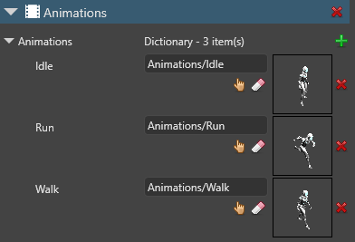
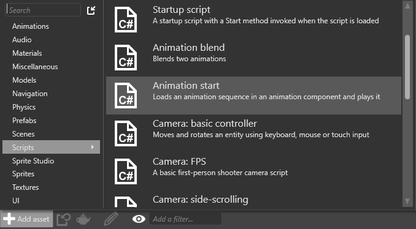
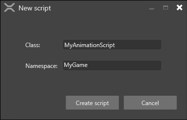

アニメーション スクリプト
中級 プログラマー
アニメーションは、スクリプトを使用して制御します。
AnimationComponent をエンティティに追加し、Game Studio でそのパラメーターを設定できます。AnimationComponent クラスは、主としてスクリプトから使用するように設計されています。
他にも次のような便利なプロパティがあります。
| プロパティ | 説明 |
|---|---|
| Animations | この AnimationComponent に関連付けられているアニメーション クリップを取得します |
| BlendTreeBuilder | アニメーション ブレンド ツリー ビルダーを取得または設定します。カスタム ブレンド ツリーを作成できることに注意してください。詳細については、「カスタム ブレンド ツリー」を参照してください |
| PlayingAnimations | アクティブなアニメーションのリストを取得します。それを使用して、スタートアップ アニメーションをカスタマイズします。再生中のアニメーションはアニメーション プロセッサによって自動的に更新されるので、リストを変更するとき、または再生中のアニメーションに対する参照を保持するときは、注意してください |
Note
スクリプトで参照しているアニメーション クリップは、AnimationComponent の下の同じエンティティに追加する必要があります。

詳細については、「アニメーションのセットアップ」を参照してください。
作成済みの AnimationStart スクリプトを使用する
Stride にはあらかじめ作成されている AnimationStart スクリプトが含まれます。このスクリプトをテンプレートとして使用し、独自のアニメーション スクリプトを作成できます。
AnimationStart スクリプトを使用するには:
［Asset view］(既定では下部のペイン) で、［Add asset］をクリックします。
［Add asset］>［Scripts］>［Animation start］を選択します。

スクリプトの名前を指定して、［Create script］をクリックします。

3a. スクリプトを保存するかどうかを確認するメッセージが表示されたら、［Yes］をクリックします。
3b. アセンブリを再ロードするかどうかを確認するメッセージが表示されたら、［Yes］をクリックします。
必要に応じてスクリプトを編集し、保存します。
アニメーション スクリプトの例
次のサンプル スクリプトは、キャラクターが歩く速さに合わせて簡単なアニメーションを割り当てます。
using Stride.Engine;
namespace AdditiveAnimation
{
public class AnimationClipExample : SyncScript
{
public float MovementSpeed { get; set; } = 0f;
private float walkingSpeedLimit = 1.0f;
// スクリプトはアニメーション コンポーネントを持つエンティティにアタッチされているものとする
private AnimationComponent animationComponent;
public override void Start()
{
// 後で必要になる変数をキャッシュする
animationComponent = Entity.Get<AnimationComponent>();
animationComponent.Play("Idle");
}
protected void PlayAnimation(string name)
{
if (!animationComponent.IsPlaying(name))
animationComponent.Play(name);
}
public override void Update()
{
if (MovementSpeed <= 0)
{
PlayAnimation("Idle");
}
else if (MovementSpeed <= walkingSpeedLimit)
{
PlayAnimation("Walk");
}
else
{
PlayAnimation("Run");
}
}
}
}
アニメーション ブレンド ツリーをオーバーライドする
アニメーション ブレンド ツリーをオーバーライドして、すべてのアニメーション ブレンディングをスクリプトで行うこともできます。テンプレート ［First-person shooter］、［Third-person platformer］、[Top-down RPG］は、これを行う方法の例であり、いくつかの高度な技法を使用しています。詳細については、「カスタム ブレンド ツリー」を参照してください。